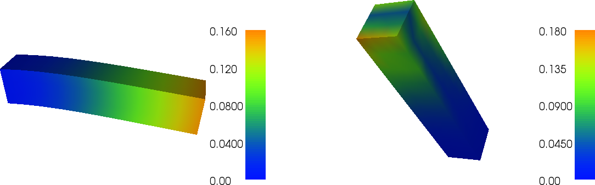
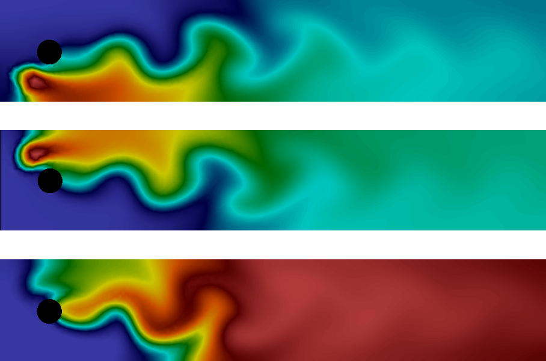

A Gallery of finite element solvers
The goal of this chapter is to demonstrate how a range of important PDEs from science and engineering can be quickly solved with a few lines of FEniCS code. We start with the heat equation and continue with a nonlinear Poisson equation, the equations for linear elasticity, and the Navier-Stokes equations. These problems illustrate how to solve time-dependent problems, nonlinear problems, vector-valued problems, and systems of PDE. For each problem, we derive the variational formulation and express the problem in Python in a way that closely resembles the mathematics.
The heat equation
As a first extension of the Poisson problem from the previous chapter, we consider the time-dependent heat equation, or time-dependent diffusion equation. This is the natural extension of the Poisson equation describing the stationary distribution of heat in a body to a time-dependent problem.
We will see that by discretizing time into small time intervals and applying standard time-stepping methods, we can solve the heat equation by solving a sequence of variational problems, much like the one we encountered for the Poisson equation.
PDE problem
Our model problem for time-dependent PDEs reads $$ \begin{align} {\partial u\over\partial t} &= \nabla^2 u + f\hbox{ in }\Omega, \tag{3.1}\\ u &= \ub\hbox{ on } \partial \Omega, \tag{3.2}\\ u &= u_0 \mbox{ at } t=0\tp \tag{3.3} \end{align} $$ Here, \( u \) varies with space and time, e.g., \( u=u(x,y,t) \) if the spatial domain \( \Omega \) is two-dimensional. The source function \( f \) and the boundary values \( \ub \) may also vary with space and time. The initial condition \( u_0 \) is a function of space only.
Variational formulation
A straightforward approach to solving time-dependent PDEs by the finite element method is to first discretize the time derivative by a finite difference approximation, which yields a sequence of stationary problems, and then turn each stationary problem into a variational formulation.
Let superscript \( n \) denote a quantity at time \( t_n \), where \( n \) is an integer counting time levels. For example, \( u^n \) means \( u \) at time level \( n \). A finite difference discretization in time first consists of sampling the PDE at some time level, say \( t_n \): $$ \begin{equation} {\partial \over\partial t}u^n = \nabla^2 u^n + f^n\tp \tag{3.4} \end{equation} $$ The time-derivative can be approximated by a finite difference. For simplicity and stability reasons, we choose a simple backward difference: $$ \begin{equation} {\partial \over\partial t}u^n\approx {u^n - u^{n-1}\over{\dt}}, \tag{3.5} \end{equation} $$ where \( \dt \) is the time discretization parameter. Inserting (3.5) in (3.4) yields $$ \begin{equation} {u^n - u^{n-1}\over{\dt}} = \nabla^2 u^n + f^n\tp \tag{3.6} \end{equation} $$ This is our time-discrete version of the heat equation (3.1). This is a so-called backward Euler or implicit Euler discretization. Alternatively, we may also view this as a finite element discretization in time in the form of the first order \( \mathrm{dG}(0) \) method, which here is identical to the backward Euler method.
We may reorder (3.6) so that the left-hand side contains the terms with the unknown \( u^n \) and the right-hand side contains computed terms only. The result is a sequence of spatial (stationary) problems for \( u^n \) (assuming \( u^{n-1} \) is known from computations at the previous time level): $$ \begin{align} u^0 &= u_0, \tag{3.7}\\ u^n - {\dt}\nabla^2 u^n &= u^{n-1} + {\dt} f^n,\quad n=1,2,\ldots \tag{3.8} \end{align} $$ Given \( u_0 \), we can solve for \( u^0 \), \( u^1 \), \( u^2 \), and so on.
An alternative to (3.8), which can be convenient in implementations, is to collect all terms on one side of the equality sign: $$ \begin{equation} u^n - {\dt}\nabla^2 u^n - u^{n-1} - {\dt} f^n = 0,\quad n=1,2,\ldots \tag{3.9} \end{equation} $$
We use a finite element method to solve (3.7) and either of the equations (3.8) or (3.9). This requires turning the equations into weak forms. As usual, we multiply by a test function \( v\in \hat V \) and integrate second-derivatives by parts. Introducing the symbol \( u \) for \( u^n \) (which is natural in the program), the resulting weak form arising from formulation (3.8) can be conveniently written in the standard notation: $$ a(u,v)=L_n(v),$$ where $$ \begin{align} a(u,v) &= \int_\Omega\left( uv + {\dt} \nabla u\cdot \nabla v\right) \dx, \tag{3.10}\\ L_n(v) &= \int_\Omega \left(u^{n-1} + {\dt} f^n\right)v \dx\tp \tag{3.11} \end{align} $$ The alternative form (3.9) has an abstract formulation $$ F(u;v) = 0,$$ where $$ \begin{equation} F(u; v) = \int_\Omega uv + {\dt} \nabla u\cdot \nabla v - (u^{n-1} + {\dt} f^n)v \dx\tp \tag{3.12} \end{equation} $$
In addition to the variational problem to be solved in each time step,
we also need to approximate the initial condition
(3.7). This equation can also be turned into a
variational problem:
$$ a_0(u,v)=L_0(v),$$
with
$$
\begin{align}
a_0(u,v) &= \int_\Omega uv \dx, \tag{3.13}\\
L_0(v) &= \int_\Omega u_0 v \dx\tp \tag{3.14}
\end{align}
$$
When solving this variational problem, \( u^0 \) becomes the
\( L^2 \) projection of the given initial value \( u_0 \) into the finite
element space. The alternative is to construct \( u^0 \) by just
interpolating the initial value \( u_0 \); that is,
if \( u^0=\sum_{j=1}^N U^0_j\phi_j \), we simply set \( U_j=u_0(x_j,y_j) \),
where \( (x_j,y_j) \) are the coordinates of node number \( j \). We refer to
these two strategies as computing the initial condition by either
projection or interpolation. Both operations are easy to
compute in FEniCS through one statement, using either the project or
interpolate function. The most common choice is project, which computes an
approximation to \( u_0 \), but in some
applications where we want to verify the code by reproducing exact solutions,
one must use interpolate (and we use such a test problem!).
In summary, we thus need to solve the following sequence of variational problems to compute the finite element solution to the heat equation: find \( u^0\in V \) such that \( a_0(u^0,v)=L_0(v) \) holds for all \( v\in\hat V \), and then find \( u^n\in V \) such that \( a(u^n,v)=L_n(v) \) for all \( v\in\hat V \), or alternatively, \( F(u^n,v)=0 \) for all \( v\in\hat V \), for \( n=1,2,\ldots \).
A simple FEniCS implementation
Our program needs to implement the time-stepping manually, but can rely on FEniCS to easily compute \( a_0 \), \( L_0 \), \( F \), \( a \), and \( L \), and solve the linear systems for the unknowns.
Test problem
Just as for the Poisson problem from the previous chapter, we construct a test problem that makes it easy to determine if the calculations are correct. Since we know that our first-order time-stepping scheme is exact for linear functions, we create a test problem which has a linear variation in time. We combine this with a quadratic variation in space. We thus take $$ \begin{equation} u = 1 + x^2 + \alpha y^2 + \beta t, \tag{3.15} \end{equation} $$ which yields a function whose computed values at the nodes will be exact, regardless of the size of the elements and \( \dt \), as long as the mesh is uniformly partitioned. By inserting (3.15) into the heat equation (3.1), we find that the right-hand side \( f \) must be given by \( f(x,y,t)=\beta - 2 - 2\alpha \). The boundary value is \( \ub(x, y, t) = 1 + x^2 + \alpha y^2 + \beta t \) and the initial value is \( u_0(x, y) = 1 + x^2 + \alpha y^2 \).
FEniCS implementation
A new programming issue is how to deal with functions that vary in
space and time, such as the boundary condition \( \ub(x, y,
t) = 1 + x^2 + \alpha y^2 + \beta t \). A natural solution is to use a
FEniCS Expression with time \( t \) as a parameter, in addition to the
parameters \( \alpha \) and \( \beta \):
alpha = 3; beta = 1.2
u_b = Expression('1 + x[0]*x[0] + alpha*x[1]*x[1] + beta*t',
degree=2, alpha=alpha, beta=beta, t=0)
This expression uses the components of x as independent
variables, while alpha, beta, and t are parameters. The
parameters can later be updated as in
u_b.t = t
The essential boundary conditions, along the entire boundary in this case, are set in the usual way:
def boundary(x, on_boundary):
return on_boundary
bc = DirichletBC(V, u0, boundary)
We shall use u for the unknown \( u^n \) at the new time level and u_p
for \( u^{n-1} \) at the previous time level. The initial value of u_p can be
computed by either projection or interpolation of \( u_0 \). Since we set
t = 0 for the boundary value u_b, we can use this also to specify
the initial condition. We can then do
u_p = project(u_b, V)
# or
u_p = interpolate(u_b, V)
We may either define \( a \) or \( L \) according to the formulas above, or we may just define \( F \) and ask FEniCS to figure out which terms that go into the bilinear form \( a \) and which that go into the linear form \( L \). The latter is convenient, especially in more complicated problems, so we illustrate that construction of \( a \) and \( L \):
u = TrialFunction(V)
v = TestFunction(V)
f = Constant(beta - 2 - 2*alpha)
F = u*v*dx + dt*dot(grad(u), grad(v))*dx - (u_p + dt*f)*v*dx
a, L = lhs(F), rhs(F)
Finally, we perform the time-stepping in a loop:
u = Function(V)
t = 0
for n in xrange(num_steps):
# Update current time
t += dt
u_b.t = t
# Solve variational problem
solve(a == L, u, bc)
# Update previous solution
u_p.assign(u)
In the last step of the time-stepping loop, we assign the values of
the variable u (the new computed solution) to the variable
containing the values at the previous time step. This must be done
using the assign member function. If we instead try to do u_p = u,
we will set the u_p Python variable to be the same variable as u
which is not what we want. (We need two variables, one for the values
at the previous time step and one for the values at the current time
step.)
u_b.t must be updated before the solve statement
to enforce computation of Dirichlet conditions at the
current time level. (The Dirichlet conditions look up the u_b object
for values.)
The time loop above does not contain any comparison of the numerical
and the exact solution, which we must include in order to verify the
implementation. As in the Poisson equation example in
the section Dissection of the program, we compute the
difference between the array of nodal values of u and the array
nodal values of
the interpolated exact solution. This may be done as follows:
u_e = interpolate(u_b, V)
error = np.abs(u_e.vector().array() - u.vector().array()).max()
print('error, t=%.2f: %-10.3g' % (t, error))
The complete program code for this time-dependent case goes as follows:
from fenics import *
import numpy as np
T = 2.0 # final time
num_steps = 10 # number of time steps
dt = T / num_steps # time step size
alpha = 3 # parameter alpha
beta = 1.2 # parameter beta
# Create mesh and define function space
nx = ny = 8
mesh = UnitSquareMesh(nx, ny)
V = FunctionSpace(mesh, 'P', 1)
# Define boundary condition
u_D = Expression('1 + x[0]*x[0] + alpha*x[1]*x[1] + beta*t',
degree=2, alpha=alpha, beta=beta, t=0)
def boundary(x, on_boundary):
return on_boundary
bc = DirichletBC(V, u_D, boundary)
# Define initial value
u_p = interpolate(u_D, V)
#u_p = project(u_D, V)
# Define variational problem
u = TrialFunction(V)
v = TestFunction(V)
f = Constant(beta - 2 - 2*alpha)
F = u*v*dx + dt*dot(grad(u), grad(v))*dx - (u_p + dt*f)*v*dx
a, L = lhs(F), rhs(F)
# Time-stepping
u = Function(V)
t = 0
for n in xrange(num_steps):
# Update current time
t += dt
u_D.t = t # update for bc
# Solve variational problem
solve(a == L, u, bc)
# Compute error at vertices
u_e = interpolate(u_D, V)
error = np.abs(u_e.vector().array() - u.vector().array()).max()
print('t = %.2f: error = %.3g' % (t, error))
# Update previous solution
u_p.assign(u)
The code is available in the file ft03_heat.py.
Diffusion of a Gaussian function
The mathematical problem
Now we want to solve a more relevant test problem, namely the diffusion of a Gaussian hill. It means that the initial value is given by $$ u_0(x,y)= e^{-ax^2 - ay^2}$$ on a domain \( [-2,2]\times [2,2] \). We will take \( a = 5 \). For this problem we will use homogeneous Dirichlet boundary conditions (\( \ub = 0 \)).
FEniCS implementation
Which are the required changes to our previous program? One major
change is that the domain is not a unit square anymore. We also want to
use much higher resolution. The new domain can
be created easily in FEniCS using RectangleMesh:
nx = ny = 30
mesh = RectangleMesh(Point(-2,-2), Point(2,2), nx, ny)
We also need to redefine the initial condition and boundary condition.
Both are easily changed by defining a new Expression and by setting
\( u = 0 \) on the boundary. We will also save the solution to file in VTK
format in each time step:
vtkfile << (u, t)
(AL 5: Remember to output as (u, t) also in other examples below.)
The complete program appears below.
from fenics import *
import time
T = 2.0 # final time
num_steps = 50 # number of time steps
dt = T / num_steps # time step size
# Create mesh and define function space
nx = ny = 30
mesh = RectangleMesh(Point(-2,-2), Point(2,2), nx, ny)
V = FunctionSpace(mesh, 'P', 1)
# Define boundary condition
def boundary(x, on_boundary):
return on_boundary
bc = DirichletBC(V, Constant(0), boundary)
# Define initial value
u_0 = Expression('exp(-a*pow(x[0],2) - a*pow(x[1],2))',
degree=2, a=5)
u_p = interpolate(u_0, V)
u_p.rename('u', 'initial value')
vtkfile = File('gaussian_diffusion.pvd')
vtkfile << (u_p, 0.0)
# Define variational problem
u = TrialFunction(V)
v = TestFunction(V)
f = Constant(0)
F = u*v*dx + dt*dot(grad(u), grad(v))*dx - (u_p + dt*f)*v*dx
a, L = lhs(F), rhs(F)
# Compute solution
u = Function(V)
u.rename('u', 'solution')
t = 0
for n in xrange(num_steps):
# Update current time
t += dt
# Solve variational problem
solve(a == L, u, bc)
# Save to file and plot solution
vtkfile << (u, float(t))
plot(u)
time.sleep(0.3)
# Update previous solution
u_p.assign(u)
This program is also available in the file ft04_gaussian_diffusion.py.
Visualization in ParaView
To visualize the diffusion of the Gaussian hill, start ParaView,
choose File - Open, open the file gaussian_diffusion.pvd, click
the green Apply button on the left to see the initial condition
being plotted. Choose View - Animation View. Click on the play
button or (better) the next frame button in the row of buttons at the
top of the GUI to see the evolution of the scalar field you have just
computed:

The cross in the middle of the plot can be turned off by the Show Center button:

Choose File - Save Animation... to save the animation to the AVI or OGG video format.

Once the animation has been saved to file, you can play the animation offline using a player such as mplayer or VLC, or upload your animation to YouTube. Below is a sequence of snapshots of the solution.

A nonlinear Poisson equation
We shall now address how to solve nonlinear PDEs. We will see that
nonlinear problems can be solved just as easily as linear problems in
FEniCS, by simply defining a nonlinear variational problem and calling
the solve function. When doing so, we will encounter a subtle
difference in how the variational problem is defined.
PDE problem
As a sample PDE for the implementation of nonlinear problems, we take the following nonlinear Poisson equation: $$ \begin{equation} -\nabla\cdot\left( q(u)\nabla u\right) = f, \tag{3.16} \end{equation} $$ in \( \Omega \), with \( u=\ub \) on the boundary \( \partial\Omega \). The coefficient \( q(u) \) makes the equation nonlinear (unless \( q(u) \) is constant in \( u \)).
Variational formulation
As usual, we multiply our PDE by a test function \( v\in\hat V \), integrate over the domain, and integrate the second-order derivatives by parts. The boundary integral arising from integration by parts vanishes wherever we employ Dirichlet conditions. The resulting variational formulation of our model problem becomes: find \( u \in V \) such that $$ \begin{equation} F(u; v) = 0 \quad \forall v \in \hat{V}, \tag{3.17} \end{equation} $$ where $$ \begin{equation} F(u; v) = \int_\Omega q(u)\nabla u\cdot \nabla v + fv \dx, \tag{3.18} \end{equation} $$ and $$ \begin{align*} V &= \{v \in H^1(\Omega) : v = \ub \mbox{ on } \partial\Omega\},\\ \hat{V} &= \{v \in H^1(\Omega) : v = 0 \mbox{ on } \partial\Omega\}\tp \end{align*} $$
The discrete problem arises as usual by restricting \( V \) and \( \hat V \) to a pair of discrete spaces. As before, we omit any subscript on the discrete spaces and discrete solution. The discrete nonlinear problem is then written as: find \( u\in V \) such that $$ \begin{equation} F(u; v) = 0 \quad \forall v \in \hat{V}, \tag{3.19} \end{equation} $$ with \( u = \sum_{j=1}^N U_j \phi_j \). Since \( F \) is a nonlinear function of \( u \), the variational statement gives rise to a system of nonlinear algebraic equations in the unknowns \( U_1,\ldots,U_N \).
A simple FEniCS implementation
Test problem
To solve a test problem, we need to choose the right-hand side \( f \),
the coefficient \( q(u) \) and the boundary value \( \ub \). Previously, we
have worked with manufactured solutions that can be reproduced without
approximation errors. This is more difficult in nonlinear problems,
and the algebra is more tedious. However, we may utilize SymPy for
symbolic computing and integrate such computations in the FEniCS
solver. This allows us to easily experiment with different
manufactured solutions. The forthcoming code with SymPy requires some
basic familiarity with this package. In particular, we will use the
SymPy functions diff for symbolic differentiation and ccode for
C/C++ code generation.
We try out a two-dimensional manufactured solution that is linear in the unknowns:
# Warning: from fenics import * will import both `sym` and
# `q` from FEniCS. We therefore import FEniCS first and then
# overwrite these objects.
from fenics import *
def q(u):
"""Nonlinear coefficient in the PDE."""
return 1 + u**2
# Use SymPy to compute f given manufactured solution u
import sympy as sym
x, y = sym.symbols('x[0] x[1]')
u = 1 + x + 2*y
f = - sym.diff(q(u)*sym.diff(u, x), x) - \
sym.diff(q(u)*sym.diff(u, y), y)
f = sym.simplify(f)
Expression objects.
Note that we would normally write x, y = sym.symbols('x y'), but
if we want the resulting expressions to have valid syntax for
FEniCS Expression objects, we must use x[0] and x[1].
This is easily accomplished with sympy by defining the names of x and
y as x[0] and x[1]: x, y = sym.symbols('x[0] x[1]').
Turning the expressions for u and f into C or C++ syntax for
FEniCS Expression objects needs two steps. First, we ask for the C
code of the expressions:
u_code = sym.printing.ccode(u)
f_code = sym.printing.ccode(f)
Sometimes, we need some editing of the result to match the required
syntax of Expression objects, but not in this case. (The primary
example is that M_PI for \( \pi \) in C/C++ must be replaced by pi for
Expression objects.) In our case here, the output of c_code and
f_code is
x[0] + 2*x[1] + 1
-10*x[0] - 20*x[1] - 10
After having defined the mesh, the function space, and the boundary,
we define the boundary value u_b as
u_b = Expression(u_code)
Similarly, we define the right-hand side function as
f = Expression(f_code)
fenics and program variables.
In a program like the one above, strange errors may occur due to
name clashes. If you define sym and q prior to doing
from fenics import *, the latter statement will also import
variables with the names sym and q, overwriting
the objects you have previously defined! This may lead to strange
errors. The safest solution is to do import fenics as fe
and then prefix all FEniCS
object names by fe. The next best solution is to do
from fenics import * first and then define your own variables
that overwrite those imported from fenics. This is acceptable
if we do not need sym and q from fenics.
FEniCS implementation
A working solver for the nonlinear Poisson equation is as easy to
implement as a solver for the corresponding linear problem.
All we need to do is to state the formula for \( F \) and call
solve(F == 0, u, bc) instead of solve(a == L, u, bc) as we did
in the linear case. Here is a minimalistic code:
from fenics import *
def q(u):
"""Nonlinear coefficient in the PDE."""
return 1 + u**2
mesh = UnitSquareMesh(32, 32)
V = FunctionSpace(mesh, 'P', 1)
u_b = Expression(...)
def boundary(x, on_boundary):
return on_boundary
bc = DirichletBC(V, u_b, boundary)
# Define variational problem
u = Function(V)
v = TestFunction(V)
f = Expression(...)
F = q(u)*dot(grad(u), grad(v))*dx - f*v*dx
# Compute solution
solve(F == 0, u, bc)
The major difference from a linear problem is that the unknown function
u in the variational form in the nonlinear case
must be defined as a Function, not a TrialFunction. In some sense
this is a simplification from the linear case where we must define u
first as a TrialFunction and then as a Function.
The solve function takes the nonlinear equations, derives symbolically
the Jacobian matrix, and runs a Newton method to compute the solution.
(AL 6: Should we display all codes like this one?) (hpl 7: Now experimenting with refernce to repo and in html and sphinx a button will fold out the code.)
The complete code is found in the file ft05_nlpoisson.py.
Running the code gives output that tells how the Newton iteration progresses. With \( 2(6\times 4) \) cells we get convergence in 7 iterations with a tolerance of \( 10^{-9} \), and the error in the numerical solution is about \( 10^{-11} \). With \( 2(3\times 3) \) and \( 2(8\times 8) \) cells the error is identically zero. Other resolutions may bring the error up to the level of the tolerance in the Newton iterations. These results bring evidence for a correct implementation. Thinking in terms of finite differences on a uniform mesh, P1 elements mimic standard second-order differences, which compute the derivative of a linear or quadratic function exactly. Here, \( \nabla u \) is a constant vector, but then multiplied by \( (1+u^2) \), which is a second-order polynomial in \( x \) and \( y \), which the divergence "difference operator" should compute exactly. We can therefore, even with P1 elements, expect the manufactured \( u \) to be reproduced by the numerical method. With a nonlinearity like \( 1+u^4 \), this will not be the case, and we would need to verify convergence rates instead.
The current example shows how easy it is to solve a nonlinear problem in FEniCS. However, experts on the numerical solution of nonlinear PDEs know very well that automated procedures may fail in nonlinear problems, and that it is often necessary to have much better manual control of the solution process than what we have in the current case. Therefore, we return to this problem in the chapter "Implementing solvers for nonlinear PDEs": "" [25] and show how we can implement our own solution algorithms for nonlinear equations and also how we can steer the parameters in the automated Newton method used above. You will then see how easy it is to implement tailored solution strategies for nonlinear problems in FEniCS.
The equations of linear elasticity
Analysis of structures is one of the major activities of modern engineering, thus making the PDEs for deformation of elastic bodies likely the most popular PDE model in the world. It takes just one page of code to solve the equations of 2D or 3D elasticity in FEniCS, and the details follow below.
PDE problem
The equations governing small elastic deformations of a body \( \Omega \) can be written as $$ \begin{align} -\nabla\cdot\sigma &= f\hbox{ in }\Omega, \tag{3.20}\\ \sigma &= \lambda\,\hbox{tr}\,\varepsilon I + 2\mu\varepsilon, \tag{3.21}\\ \varepsilon &= \frac{1}{2}\left(\nabla u + (\nabla u)^{\top}\right), \tag{3.22} \end{align} $$ where \( \sigma \) is the stress tensor, \( f \) is the body force per unit volume, \( \lambda \) and \( \mu \) are Lame's elasticity parameters for the material in \( \Omega \), \( I \) is the identity tensor, \( \mathrm{tr} \) is the trace operator on a tensor, \( \varepsilon \) is the strain tensor (symmetric gradient), and \( u \) is the displacement vector field. We have here assumed isotropic elastic conditions.
We combine (3.21) and (3.22) to obtain $$ \begin{equation} \sigma = \lambda(\nabla\cdot u)I + \mu(\nabla u + (\nabla u)^{\top})\tp \tag{3.23} \end{equation} $$ Note that (3.20)-(3.22) can easily be transformed to a single vector PDE for \( u \), which is the governing PDE for the unknown \( u \) (Navier's equation). In the derivation of the variational formulation, however, it is convenient to keep the splitting of the equations as above.
Variational formulation
The variational formulation of (3.20)--(3.22) consists of forming the inner product of (3.20) and a vector test function \( v\in \hat{V} \), where \( \hat{V} \) is a test vector function space, and integrating over the domain \( \Omega \): $$ -\int_\Omega (\nabla\cdot\sigma) \cdot v \dx = \int_\Omega f\cdot v\dx\tp$$ Since \( \nabla\cdot\sigma \) contains second-order derivatives of the primary unknown \( u \), we integrate this term by parts: $$ -\int_\Omega (\nabla\cdot\sigma) \cdot v \dx = \int_\Omega \sigma : \nabla v\dx - \int_{\partial\Omega} (\sigma\cdot n)\cdot v \ds,$$ where the colon operator is the inner product between tensors (summed pairwise product of all elements), and \( n \) is the outward unit normal at the boundary. The quantity \( \sigma\cdot n \) is known as the traction or stress vector at the boundary, and is often prescribed as a boundary condition. We assume that it is prescribed at a part \( \partial\Omega_T \) of the boundary and set \( T = \sigma\cdot n \). On the remaining part of the boundary, we assume that the value of the displacement is given as a Dirichlet condition. We then have $$ \int_\Omega \sigma : \nabla v \dx = \int_\Omega f\cdot v \dx + \int_{\partial\Omega_T} T\cdot v\ds\tp$$ Inserting the expression (3.23) for \( \sigma \) gives the variational form with \( u \) as unknown. Note that the boundary integral on the remaining part \( \partial\Omega\setminus\Omega_T \) vanishes due to the Dirichlet condition (\( v = 0 \)).
We can now summarize the variational formulation as: find \( u\in V \) such that $$ \begin{equation} a(u,v) = L(v)\quad\forall v\in\hat{V}, \tag{3.24} \end{equation} $$ where $$ \begin{align} a(u,v) &= \int_\Omega\sigma(u) :\nabla v \dx, \tag{3.25} \\ \sigma(u) &= \lambda(\nabla\cdot u)I + \mu(\nabla u + (\nabla u)^{\top}), \tag{3.26}\\ L(v) &= \int_\Omega f\cdot v\dx + \int_{\partial\Omega_T} T\cdot v\ds\tp \tag{3.27} \end{align} $$
One can show that the inner product of a symmetric tensor \( A \) and a non-symmetric tensor \( B \) vanishes. If we express \( \nabla v \) as a sum of its symmetric and non-symmetric parts, only the symmetric part will survive in the product \( \sigma :\nabla v \) since \( \sigma \) is a symmetric tensor. Thus replacing \( \nabla u \) by the symmetric gradient \( \epsilon(u) \) gives rise to the slightly different variational form $$ \begin{equation} a(u,v) = \int_\Omega\sigma(u) :\varepsilon(v) \dx, \tag{3.28} \end{equation} $$ where \( \varepsilon(v) \) is the symmetric part of \( \nabla v \): $$ \varepsilon(v) = \frac{1}{2}\left(\nabla v + (\nabla v)^{\top}\right)\tp$$ The formulation (3.28) is what naturally arises from minimization of elastic potential energy and is a more popular formulation than (3.25).
A simple FEniCS implementation
Test problem
As a test example, we may look at a clamped beam deformed under its own weight. Then \( f=(0,0,-\varrho g) \) is the body force per unit volume with \( \varrho \) the density of the beam and \( g \) the acceleration of gravity. The beam is box-shaped with length \( L \) and square cross section of width \( W \). We set \( u=(0,0,0) \) at the clamped end, \( x=0 \). The rest of the boundary is traction free; that is, we set \( T = 0 \).
The code
We first list the code and then comment upon the new constructions compared to the Poisson equation case.
from fenics import *
# Scaled variables
L = 1; W = 0.2
mu = 1
rho = 1
delta = W/L
gamma = 0.4*delta**2
beta = 1.25
lambda_ = beta
g = gamma
# Create mesh and define function space
mesh = BoxMesh(Point(0,0,0), Point(L,W,W), 10, 3, 3)
V = VectorFunctionSpace(mesh, 'P', 1)
# Define boundary conditions
tol = 1E-14
def clamped_boundary(x, on_boundary):
return on_boundary and (x[0] < tol)
bc = DirichletBC(V, Constant((0,0,0)), clamped_boundary)
def epsilon(u):
return 0.5*(nabla_grad(u) + nabla_grad(u).T)
#return sym(nabla_grad(u))
def sigma(u):
return lambda_*nabla_div(u)*Identity(d) + 2*mu*epsilon(u)
# Define variational problem
u = TrialFunction(V)
d = u.geometric_dimension() # no of space dim
v = TestFunction(V)
f = Constant((0,0,rho*g))
T = Constant((0,0,0))
a = inner(sigma(u), epsilon(v))*dx
L = -dot(f, v)*dx + dot(T, v)*ds
# Compute solution
u = Function(V)
solve(a == L, u, bc)
# Plot solution and mesh
plot(u, title='Displacement', mode='displacement')
s = sigma(u) - (1./3)*tr(sigma(u))*Identity(d) # deviatoric stress
von_Mises = sqrt(3./2*inner(s, s))
V = FunctionSpace(mesh, 'P', 1)
von_Mises = project(von_Mises, V)
plot(von_Mises, title='Stress intensity')
u_magnitude = sqrt(dot(u,u))
u_magnitude = project(u_magnitude, V)
plot(u_magnitude, 'Displacement magnitude')
print('min/max u:', u_magnitude.vector().array().min(),
u_magnitude.vector().array().max())
New feature: vector function space
The primary unknown is now a vector field \( u \) and not a scalar field, so we need to work with a vector function space:
V = VectorFunctionSpace(mesh, 'P', 1)
With u = Function(V) we get u as a vector finite element function.
New feature: constant vectors
In the boundary condition \( u=0 \), we must set a vector value to zero, not just
a scalar, and a constant zero vector is specified as Constant((0,0,0)) in
FEniCS. The corresponding 2D code would use Constant((0,0)).
Later in the code, we also need f as a vector and specify it
as Constant(0,0,rho*g)).
New feature: nabla_grad
The gradient and divergence operators now have a prefix nabla_.
This is strictly not necessary in the present problem, but
recommended in general for vector PDEs arising from continuum mechanics,
if you interpret \( \nabla \) as a vector in the PDE notation,
see the box about nabla_grad in the section Variational formulation.
New feature: stress computation
As soon as u is computed, we can compute various stress measures, here
the von Mises stress defined as \( \sigma_M = \sqrt{\frac{3}{2}s:s} \)
where \( s \) is the deviatoric stress tensor
$$ s = \sigma - \frac{1}{3}\mathrm{tr}\,\sigma\,I\tp$$
There is a one to one mapping between these formulas and the FEniCS code:
s = sigma(u) - (1./3)*tr(sigma(u))*Identity(d)
von_Mises = sqrt(3./2*inner(s, s))
The von_Mises variable is now an expression that must be projected to
a finite element space before we can visualize it.
Scaling
Before doing simulations for a specific problem, it is often advantageous to scale the problem as it reduces the need for setting physical parameters, and one obtains dimensionsless numbers that reflect the competition of parameters and physical effects. We develop the code for the original model with dimensions, and run the scaled problem by tweaking parameters appropriately. Scaling reduces the number of active parameters from 6 to 2 in the present application.
In Navier's equation for \( u \), arising from inserting (3.21) and (3.22) in (3.20), $$ \nabla\cdot(\lambda\nabla\cdot u) + \mu\nabla^2 u = f,$$ we insert coordinates made dimensionless by \( L \), and \( \bar u=u/U \), which results in the dimensionless governing equation $$ \beta\bar\nabla\cdot(\bar\nabla\cdot \bar u) + \bar\nabla^2 \bar u = \bar f,\quad \bar f = (0,0,\gamma),$$ where \( \beta = \lambda/\mu \) is a dimensionless elasticity parameter and $$ \gamma = \frac{\varrho gL^2}{\mu U}$$ is also a dimensionless variable reflecting the ratio of the load \( \varrho g \) and the shear stress term \( \mu\nabla^2 u\sim \mu U/L^2 \) in the PDE.
(AL 8: Need to change above scaling argument now that \( \varrho \) is not part of the equation?) (hpl 9: No, we just inserted our particular \( f \) which is \( \varrho g \).)
(AL 10: \( W \) not defined below. Width?) (hpl 11: Defined in the test problem in the intro. But a comment what \( L/W \) is, is now inserted.)
Sometimes, one will argue to chose \( U \) to make \( \gamma \) unity (\( U = \varrho gL^2/\mu \)). However, in elasticity, this leads us to displacements of the size of the geometry, which makes plots look very strange. We therefore want the characteristic displacement to be a small fraction of the characteristic length of the geometry. This can be achieved by choosing \( U \) equal to the maximum deflection of a clamped beam, for which there actually exists an formula: \( U = \frac{3}{2}\varrho gL^2\delta^2/E \), where \( \delta = L/W \) is a parameter reflecting how slender the beam is, and \( E \) is the modulus of elasticity. Thus, the dimensionless parameter \( \delta \) is very important in the problem (as expected, since \( \delta\gg 1 \) is what gives beam theory!). Taking \( E \) to be of the same order as \( \mu \), which is common for a lot of materials, we realize that \( \gamma \sim \delta^{-2} \) is an appropriate choice. Doing experiments with the code to find a displacement that "looks right" in plots of the deformed geometry, points to \( \gamma = 0.4\delta^{-2} \) as our final choice of \( \gamma \).
The simulation code implements the problem with dimensions and physical parameters \( \lambda \), \( \mu \), \( \varrho \), \( g \), \( L \), and \( W \). However, we can easily reuse this code for a scaled problem: just set \( \mu = \varrho = L = 1 \), \( W \) as \( W/L \) (\( \delta^{-1} \)), \( g=\gamma \), and \( \lambda=\beta \).
(AL 12: I find this somewhat confusing. First we talk about a rescaled equation but then we solve the unscaled equation, but we choose the parameters so that it is somehow related to the scaled problem...?) (hpl 13: Rewrote the sequence of topics to make all this clearer. First, implement non-scaled orginal problem, then for each problem in problems, scale this problem, run scaled problem with non-scaled code.)
(AL 14: Need to look at code again once I have understood the scaling.)
Figure 8: Gravity-induced deformation of a clamped beam: deflection (left) and stress intensity seen from below (right).

The Navier–Stokes equations
As our next example in this chapter, we will solve the incompressible Navier-Stokes equations. This problem combines many of the challenges from our previously studied problems: time-dependence, nonlinearity, and vector-valued variables. We shall touch a number of FEniCS topics, many of them quite advanced, so the exposition has the flavor of being a teaser of what can be easily achieved in FEniCS, while later chapters will dive into more detail with the most fundamental new topics touched upon here. Do not expect to understand every detail of this section – the point is rather to show how a quite complex PDE problem is broken down to an implementation that still can be defended to be carried out in minutes rather than hours or days.
PDE problem
The incompressible Navier-Stokes equations are a system of equations for the velocity \( u \) and pressure \( p \) in an incompressible fluid:
(hpl 15: Quite uncommon to write \( \dot u \) for the time-derivative in the N-S equations. Only Claes Johnson comes to my mind... In mechanics, the dot is reserved for ODEs. I suggest the more common notation \( \partial u/\partial t \), also since we use this elsewhere in the books. One can also argue that \( \nabla^2 u \) is a much more common form for the viscosity term (and compatible with your boundary conditions at outlets now), but the stress formulation has many advantages, especially if stress is a boundary condition.) $$ \begin{align} \tag{3.29} \varrho(\frac{\partial u}{\partial t} + u \cdot \nabla u) &= \nabla\cdot\sigma(u, p) + f, \\ \tag{3.30} \nabla \cdot u &= 0. \end{align} $$ The right-hand side \( f \) is a given force per unit volume and just as for the equations of linear elasticity, \( \sigma(u, p) \) denotes the stress tensor which for a Newtonian fluid is given by $$ \begin{equation} \sigma(u, p) = 2\mu\epsilon(u) - pI, \tag{3.31} \end{equation} $$ where \( \epsilon(u) \) is the strain-rate tensor $$ \epsilon(u) = \frac{1}{2}(\nabla u + (\nabla u)^T))\tp$$ The parameter \( \mu \) is the dynamic viscosity. Note that the momentum equation (3.29) is very similar to the elasticity equation (3.20). The difference is the two additional terms \( \varrho(\dot{u} + u \cdot \nabla u) \) and the different expression for the stress tensor. The two extra terms express the acceleration balanced by the force \( F = f + \nabla\cdot\sigma \) per unit volume in Newton's second law of motion. However, the differences from the elasticity are big enough to call for a much more complicated solution procedure.
Variational formulation
The Navier–Stokes equations are different from the time-dependent heat equation in that we need to solve a system of equations and this system is of a special type. If we apply the same technique as for the heat equation; that is, replacing the time derivative with a simple difference quotient, we get a nonlinear system of equations. This in itself is not a problem for FEniCS as we saw in the section A nonlinear Poisson equation, but the system has a so-called saddle point structure and requires special techniques (preconditioners and iterative methods) to be solved efficiently.
Instead, we will apply a simpler and often very efficient approach, known as a splitting method. The idea is to consider the two equations (3.29) and (3.30) separately. There exist many splitting strategies for the incompressible Navier-Stokes equations. One of the oldest is the method proposed by Chorin [26] and Temam [27], often referred to as Chorin's method. We will use a modified version of Chorin's method, the so-called incremental pressure correction scheme (IPCS) due to [28] which gives improved accuracy compared to the original scheme at little extra cost.
(hpl 16: I changed the sampling point in time to \( n+1/2 \) instead of \( n-1/2 \) because the former gives the same type as formulas as we use elsewhere in time-dependent problems (\( n+1 \) is the new level, \( n \), \( n-1 \) etc are old levels) and it fits the naming convention that we agreed upon. This is also widely used in the FDM/FEM/FVM literature. Backward Euler for the heat equation is the only example where one often applies \( n \) and \( n-1 \), if the theta scheme is not mentioned.)
The IPCS scheme involves three steps. First, we compute a tentative velocity \( u^{\star} \) by advancing the momentum equation (3.29) by a midpoint finite difference scheme in time, but using the pressure \( p^{n} \) from the previous time interval. We will also linearize the nonlinear convective term by using the known velocity \( u^{n} \): \( u^{n}\cdot\nabla u^{n} \). The variational problem for this first step is:
(hpl 17: It's somewhat strange that we are inconsistent with the convective term, it should be linearized as \( u^{n-1}\cdot\nabla u^{n-1/2} \), but we just have to follow the IPCS formulas...) $$ \begin{align} \tag{3.32} & \renni{v}{\rho(u^{\star} - u^{n}) / \dt} + \renni{v}{\rho u^{n} \cdot \nabla u^{n}} + \nonumber\\ & \renni{\epsilon(v)}{\sigma(u^{n+\frac{1}{2}}, p^{n})} + \renni{v}{p^{n} n}_{\partial\Omega} - \nonumber\\ &\renni{v}{\mu \nabla u^{n+\frac{1}{2}}\cdot n}_{\partial\Omega} = \renni{v}{\rho f^{n+1}} \tag{3.33} \end{align} $$ This notation, suitable for problems with many terms in the variational formulations, requires some explanation. First, we use the short-hand notation $$ \inner{v}{w} = \int_{\Omega} vw \dx, \quad \inner{v}{w}_{\partial\Omega} = \int_{\partial\Omega} vw \ds. $$ This allows us to express the variational problem in a more compact way. Second, we use the notation \( u^{n+\frac{1}{2}} \). This notation means the value of \( u \) at the midpoint of the interval, usually approximated by an arithmetic mean $$ u^{n+\frac{1}{2}} \approx (u^{n+1} + u^n) / 2. $$ Third, we notice that the variational problem (3.32) arises from the integration by parts of the term \( \inner{-\nabla\cdot\sigma}{v} \). Just as for the elasticity problem in the section The equations of linear elasticity, we obtain $$ \inner{-\nabla\cdot\sigma}{v} = \inner{\sigma}{\epsilon(v)} - \inner{T}{v}_{\partial\Omega}, $$ where \( T = \sigma\cdot n \) is the boundary traction. If we solve a problem with a free boundary, we can take \( T = 0 \) on the boundary. However, if we compute the flow through a channel or a pipe and want to model flow that continues into an "imaginary channel" at the outflow, we need to treat this term with some care. The assumption we then make is that the derivative of the velocity in the direction of the channel is zero at the outflow, corresponding to a flow that is "fully developed" or doesn't change significantly downstream of the outflow. Doing so, the remaining boundary term at the outflow becomes \( pn - \mu\nabla u \cdot n \) which is the term appearing in the variational problem (3.32).
(hpl 18: Here a boundary term \( (\mu n\cdot \nabla u^{n+\frac{1}{2}},v) \) is missing. This is the intricate discussions we had back in 2009-2010 with Harish on using N-S with \( \nabla\cdot\sigma \) or \( \nabla^2 u \).)
(AL 19: Apostrophes like "these" don't look like what I would expect in LaTeX.) (hpl 20: No, double quotes must be written as in LaTeX "quotes". Two backticks and two forward ticks become the right double quotes in various output formats.)
grad(u) vs. nabla_grad(u).
For scalar functions \( \nabla u \) has a clear meaning as the vector
$$ \nabla u =(\frac{\partial u}{\partial x}, \frac{\partial u}{\partial y},
\frac{\partial u}{\partial z})\tp$$
However, if \( u \) is vector-valued, the meaning is less clear.
Some sources define \( \nabla u \) as the matrix with elements
\( \partial u_j / \partial x_i \) while other sources prefer
\( \partial u_i / \partial x_j \). In FEniCS, grad(u) is defined as the
matrix with elements \( \partial u_i / \partial x_j \), which is the
natural definition of \( \nabla u \) if we think of this as the gradient or
derivative of \( u \). This way, the matrix \( \nabla u \) can be applied to
a differential \( \dx \) to give an increment \( \mathrm{d}u = \nabla u \,
\dx \). Since the alternative interpretation of \( \nabla u \) as the matrix
with elements \( \partial u_j / \partial x_i \) is very common, in
particular in continuum mechanics, FEniCS
provides the operator nabla_grad for this purpose.
For the Navier-Stokes equations, it is important to consider the
term \( u \cdot \nabla u \) which should be interpreted as the vector
\( w \) with elements
\( w_i = \sum_j \left(u_j \frac{\partial}{\partial x_j}\right) u_i
= \sum_j u_j \frac{\partial u_i}{\partial x_j} \).
This term can be implemented in FEniCS either as
grad(u)*u, since this is expression becomes
\( \sum_j \partial u_i/\partial x_j u_j \), or as
dot(u, nabla_grad(u)) since this expression becomes
\( \sum_i u_i \partial u_j/\partial x_i \). We will use the notation
dot(u, nabla_grad(u)) below since it corresponds more closely
to the standard notation \( u \cdot \nabla u \).
(hpl 21: I like the straightforward formulation above, but it should be complemented by the arguments below since it is not a matter of taste in the end, but dictated by derivation of the PDE and what \( \nabla \) was meant to be there.)
To be more precise, there are three different notations used for PDEs
involving gradient, divergence, and curl operators.
One employs \( \mathrm{grad}\, u \), \( \mathrm{div}\, u \), and
\( \mathrm{curl}\, u \) operators. Another employs \( \nabla u \)
as a synonym for \( \mathrm{grad}\, u \), \( \nabla\cdot u \) means \( \mathrm{div}\, u \),
and \( \nabla\times u \) is the name for \( \mathrm{curl}\, u \). The
third operates with \( \nabla u \), \( \nabla\cdot u \), and \( \nabla\times u \)
in which \( \nabla \) is a vector and, e.g., \( \nabla u \) is a dyadic
expression (\( (\nabla u)_{i,j} = \partial u_j/\partial x_i =
(\mathrm{grad} u)^T \)).
The latter notation, with \( \nabla \) as a vector operator,
is often handy when deriving equations in continuum mechanics, and if
this interpretation of \( \nabla \) is the foundation of your PDE, you must
use nabla_grad, nabla_div, and nabla_curl in FEniCS code as
these operators are compatible with dyadic computations.
From the Navier-Stokes equations we can easily see what \( \nabla \) means:
if the convective term has the form \( u\cdot \nabla u \) (actually meaning
\( (u\cdot\nabla) u \)), \( \nabla \) is a vector operator, reading
dot(u, nabla_grad(u)) in FEniCS, but if we see
\( \nabla u\cdot u \) or \( (\mathrm{grad} u)\cdot u \), the
corresponding FEniCS
expression is dot(grad(u), u).
We now move on to the second step in our splitting scheme for the incompressible Navier-Stokes equations. In the first step, we computed the tentative velocity \( u^{\star} \) based on the pressure from the previous time step. We may now use the computed tentative velocity to compute the new pressure \( p^n \): $$ \begin{equation} \tag{3.34} \renni{\nabla q}{\nabla p^n} = \renni{\nabla q}{\nabla p^{n-1}} - \dt^{-1}\renni{q}{\nabla \cdot u^{\star}}. \end{equation} $$ Note here that \( q \) is a scalar-valued test function from the pressure space, whereas the test function \( v \) in (3.32) is a vector-valued test function from the velocity space.
One way to think about this step is to subtract the Navier-Stokes momentum equation (3.29) expressed in terms of the tentative velocity \( u^{\star} \) and the pressure \( p^{n-1} \) from the momentum equation expressed in terms of the velocity \( u^n \) and pressure \( p^n \). This results in the equation $$ \begin{equation} \tag{3.35} (u^n - u^{\star}) / \dt + \nabla p^n - \nabla p^{n-1} = 0. \end{equation} $$ Taking the divergence and requiring that \( \nabla \cdot u^n = 0 \) by the Navier-Stokes continuity equation (3.30), we obtain the equation \( -\nabla\cdot u^{\star} / \dt + \nabla^2 p^n - \nabla p^{n-1} \), which is a Poisson problem for the pressure \( p^n \) resulting in the variational problem (3.34).
Finally, we compute the corrected velocity \( u^n \) from the equation (3.35). Multiplying this equation by a test function \( v \), we obtain $$ \begin{equation} \tag{3.36} \renni{v}{u^n} = \renni{v}{u^{\star}} - \dt\renni{v}{\nabla(p^n-p^{n-1})}. \end{equation} $$
In summary, we may thus solve the incompressible Navier-Stokes equations efficiently by solving a sequence of three linear variational problems in each time step.
A simple FEniCS implementation
Test problem 1: Channel flow
As a first test problem, we compute the flow between two infinite plates, so-called channel or Poiseuille flow, since this problem has a known analytical solution. Let \( H \) be the distance between the plates and \( L \) the length of the channel. There are no body forces.
We may scale the problem first to get rid of seemingly independent physical parameters. The physics of this problem is governed by viscous effects only, in the direction perpendicular to the flow, so a time scale should be based in diffusion accross the channel: \( t_c = H^2/\nu \). We let \( U \), some characteristic inflow, be the velocity scale and \( H \) the spatial scale. The pressure scale is taken as the characteristic shear stress, \( \mu U/H \), since this is a primary example of shear flow. Inserting \( \bar x = x/H \), \( \bar y = y/H \), \( \bar z = z/H \), \( \bar u =u/U \), \( \bar p = Hp/(\mu U) \), and \( \bar t = H^2/\nu \) in the equations results in the scaled Navier-Stokes equations (dropping bars after the scaling): $$ \begin{align*} \frac{\partial u}{\partial t} + \mathrm{Re}\, u\cdot\nabla u &= -\nabla p + \mu\nabla^2 u + \mu\nabla(\nabla\cdot u),\\ \nabla\cdot u &= 0\tp \end{align*} $$ Here, Re is the Reynolds number \( \rho UH/\mu \). Because of the time and pressure scale, which are different from convection-dominated fluid flow, the Reynolds number is associated with the convective term and not the viscosity term. Note that the last term in the first equation is zero, but we included this term as it arises naturally from the original \( \nabla\cdot\sigma \) term.
The exact solution is derived by assuming \( u=(u_x(x,y,z),0,0) \), with the \( x \) axis pointing along the channel. Since \( \nabla\cdot u=0 \), \( u \) cannot depend on \( x \). The physics of channel flow is also two-dimensional so we can omit the \( z \) coordinate (more precisely: \( \partial/\partial z=0 \)). Inserting \( u=(u_x,0,0) \) in the (scaled) governing equations gives \( u_x''(y) = \partial p/\partial x \). Differentiating this equation with respect to \( x \) shows that \( \partial p/\partial x \) is a constant, here called \( -\beta \). This is the driving force of the flow and can be specified as a known parameter in the problem. Integrating \( u_x''(y)=-\beta \) over the width of the channel, \( [0,1] \), and requiring \( u=0 \) at the channel walls, results in \( u_x=\frac{1}{2}\beta y(1-y) \). The characteristic inlet flow in the channel, \( U \), can be taken as the maximum inflow at \( x=1/2 \), implying that \( \beta = 8 \). The length of the channel, \( L/H \) in the scaled model, has no impact on the result, so for simplicity we just compute on the unit square. Mathematically, the pressure must be prescribed at a point, but since \( p \) does not depend on \( y \), we can set \( p \) to a known value, e.g. zero, along the outlet boundary \( x=1 \). The result is \( p(x)=8(1-x) \) and \( u_x=4y(1-y) \).
The boundary conditions can be set as \( p=1 \) on \( x=0 \), \( p=0 \) on \( x=1 \) and \( u=0 \) on the walls \( y=0,1 \). This defines the pressure drop and should result in unit maximum velocity at the inlet and outlet and a parabolic velocity profile without further specifications. Note that it is only meaningful to solve the Navier-Stokes equations in 2D or 3D geometries, although the underlying mathematical problem collapses to two 1D problems, one for \( u_x(y) \) and one for \( p(x) \).
The scaled model is not so easy to simulate using a standard Navier-Stokes solver with dimensions. However, one can argue that the convection term is zero, so the Re coefficient in front of this term in the scaled PDEs is not important and can be set to unity. In that case, setting \( \rho = \mu = 1 \) in the original Navier-Stokes equations resembles the scaled model.
FEniCS implementation
Our previous examples have all started out with the creation of a
mesh and then the definition of a FunctionSpace on the mesh. For the
splitting scheme we will use to solve the Navier-Stokes equations we
need to define two function spaces, one for the velocity and one for
the pressure:
V = VectorFunctionSpace(mesh, 'P', 2)
Q = FunctionSpace(mesh, 'P', 1)
The first space V is a vector-valued function space for the velocity
and the second space Q is a scalar-valued function space for the
pressure. We use piecewise quadratic elements for the velocity and
piecewise linear elements for the pressure. When creating a
VectorFunctionSpace in FEniCS, the value-dimension (the length of
the vectors) will be set equal to the geometric dimension of the
finite element mesh. One can easily create vector-valued function
spaces with other dimensions in FEniCS by adding the keyword parameter
dim:
V = VectorFunctionSpace(mesh, 'P', 2, dim=10)
Since we have two different function spaces, we need to create two sets of trial and test functions:
u = TrialFunction(V)
v = TestFunction(V)
p = TrialFunction(Q)
q = TestFunction(Q)
As we have seen in previous examples, boundaries may be defined in
FEniCS by defining Python functions that return True or False
depending on whether a point should be considered part of the
boundary, for example
def boundary(x, on_boundary):
return near(x[0], 0)
This function defines the boundary to be all points with
\( x \)-coordinate equal to (near) zero. The near function comes from
FEniCS and performs a test with tolerance: abs(x[0]-0) < 3E-16 so
we do not run into rounding troubles.
Alternatively, we may give the boundary
definition as a string of C++ code, much like we have previously
defined expressions such as u0 = Expression('1 + x[0]*x[0] +
2*x[1]*x[1]'). The above definition of the boundary in terms of a
Python function may thus be replaced by a simple C++ string:
boundary = 'near(x[0], 0)'
This has the advantage of moving the computation of which nodes belong to boundary to C++ from Python, which improves the efficiency of the program.
For the current example, we will set three different boundary conditions. First, we will set \( u = 0 \) at the walls of the channel; that is, at \( y = 0 \) and \( y = 1 \). Second, we will set \( p = 1 \) at the inflow (\( x = 0 \)) and, finally, \( p = 0 \) at the outflow (\( x = 1 \)). This will result in a pressure gradient that will accelerate the flow from an initial stationary state. These boundary conditions may be defined as follows:
# Define boundaries
inflow = 'near(x[0], 0)'
outflow = 'near(x[0], 1)'
walls = 'near(x[1], 0) || near(x[1], 1)'
# Define boundary conditions
bcu_noslip = DirichletBC(V, Constant((0, 0)), walls)
bcp_inflow = DirichletBC(Q, Constant(8), inflow)
bcp_outflow = DirichletBC(Q, Constant(0), outflow)
bcu = [bcu_noslip]
bcp = [bcp_inflow, bcp_outflow]
At the end, we collect the boundary conditions for the velocity and pressure in Python lists so we can easily access them in the following computation.
We now move on to the definition of the variational forms. There are three variational problems to be defined, one for each step in the IPCS scheme. Let us look at the definition of the first variational problem. We start with some constants:
U = 0.5*(u_n + u)
n = FacetNormal(mesh)
f = Constant((0, 0))
k = Constant(dt)
mu = Constant(mu)
rho = Constant(rho)
The next step now is to set up the variational form for the first step
(3.32) in the solution process.
Since the variational problem contains a mix of
known and unknown quantities we have introduced a naming convention to
be used throughout the book: u is the unknown (mathematically \( u^{n+1} \))
as a trial function in the variational form, u_ is the most recently
computed approximation to u (\( u^{n+1} \) available as a finite element
FEniCS Function object), u_n is \( u^n \), and the same convention
goes for p. p_, and p_n.
def epsilon(u):
return sym(nabla_grad(u))
# Define stress tensor
def sigma(u, p):
return 2*mu*epsilon(u) - p*Identity(len(u))
# Define variational problem for step 1
F1 = rho*dot((u - u_n) / k, v)*dx + \
rho*dot(dot(u_n, nabla_grad(u_n)), v)*dx \
+ inner(sigma(U, p_n), epsilon(v))*dx \
+ dot(p_n*n, v)*ds - dot(mu*nabla_grad(U)*n, v)*ds \
- rho*dot(f, v)*dx
a1 = lhs(F1)
L1 = rhs(F1)
Note that we, in the definition of the variational problem,
take advantage of the
Python programming language to define our own operators sigma and
epsilon. Using Python this way makes it easy to extend the
mathematical language of FEniCS with special operators and
constitutive laws.
Also note that FEniCS can sort out the (matrix) \( a(u,v) \) and
(right-hand side) \( L(v) \) forms by the lhs
and rhs functions. This is particularly convenient in longer and
more complicated variational forms.
The splitting scheme requires the solution of a sequence of three
variational problems in each time step. We have previously used the
built-in FEniCS function solve to solve variational problems. Under
the hood, when a user calls solve(a == L, u, bc), FEniCS will
perform the following steps:
A = assemble(A)
b = assemble(L)
bc.apply(A, b)
solve(A, u.vector(), b)
In the last step, FEniCS uses the overloaded solve function to solve
the linear system AU = b where U is the vector of degrees of
freedom for the function \( u(x) = \sum_{j=1} U_j \phi_j(x) \).
In our implementation of the splitting scheme, we will make use of these low-level commands to first assemble and then call solve. This has the advantage that we may control when we assemble and when we solve the linear system. In particular, since the matrices for the three variational problems are all time-independent, it makes sense to assemble them once and for all outside of the time-stepping loop:
A1 = assemble(a1)
A2 = assemble(a2)
A3 = assemble(a3)
Within the time-stepping loop, we may then assemble only the right-hand side vectors, apply boundary conditions, and call the solve function as here for the first of the three steps:
# Time-stepping
t = 0
for n in range(num_steps):
# Update current time
t += dt
# Step 1: Tentative velocity step
b1 = assemble(L1)
[bc.apply(b1) for bc in bcu]
solve(A1, u_.vector(), b1)
Notice the Python list comprehension [bc.apply(b1) for bc in bcu]
which iterates over all bc in the list bcu. This is a convenient
and compact way to construct a loop that applies
all boundary conditions in a single line. Also, the code works if
we add more Dirichlet boundary conditions in the future.
Finally, let us look at an important detail in how we use parameters
such as the time step dt in the definition of our variational
problems. Since we might want to change these later, for example if we
want to experiment with smaller or larger time steps, we wrap these
using a FEniCS Constant:
k = Constant(dt)
The assembly of matrices and vectors in FEniCS is based on code
generation. This means that whenever we change a variational problem,
FEniCS will have to generate new code, which may take a little
time. New code will also be generated when a float value for the time
step is changed. By wrapping this parameter using
Constant, FEniCS will treat the parameter as a generic constant and
not a specific numerical value, which prevents repeated code
generation. In the case of the time step, we choose a new name k
instead of dt for the Constant since we also want to use the
variable dt as a Python float as part of the time-stepping.
(hpl 22: Some pure fluid mechanics guys will think of Poiseulle as 1D, so they get confused why you need to launch 2D/3D code when it's about \( u''=4 \) and can be done in Matlab... Renamed file to navier_stokes_channel.py. :smiley:)
The complete code for simulating 2D channel flow with FEniCS looks as follows:
(hpl 23: The names u0, u1, p0, p1 are odd compared to the rest of the book. I changed to u_, u_n, p_, p_n, with u and p reserved for TrialFunction. The we encourage users to use a consistent naming – and this naming works for multiple time levels too.)
from fenics import *
import numpy as np
T = 10.0 # final time
num_steps = 500 # number of time steps
dt = T / num_steps # time step size
mu = 1 # kinematic viscosity
rho = 1 # density
# Create mesh and define function spaces
mesh = UnitSquareMesh(16, 16)
V = VectorFunctionSpace(mesh, 'P', 2)
Q = FunctionSpace(mesh, 'P', 1)
# Define boundaries
inflow = 'near(x[0], 0)'
outflow = 'near(x[0], 1)'
walls = 'near(x[1], 0) || near(x[1], 1)'
# Define boundary conditions
bcu_noslip = DirichletBC(V, Constant((0, 0)), walls)
bcp_inflow = DirichletBC(Q, Constant(8), inflow)
bcp_outflow = DirichletBC(Q, Constant(0), outflow)
bcu = [bcu_noslip]
bcp = [bcp_inflow, bcp_outflow]
# Define trial and test functions
u = TrialFunction(V)
v = TestFunction(V)
p = TrialFunction(Q)
q = TestFunction(Q)
# Define functions for solutions at previous and current time steps
u_n = Function(V)
u_ = Function(V)
p_n = Function(Q)
p_ = Function(Q)
# Define expressions used in variational forms
U = 0.5*(u_n + u)
n = FacetNormal(mesh)
f = Constant((0, 0))
k = Constant(dt)
mu = Constant(mu)
rho = Constant(rho)
# Define strain-rate tensor
def epsilon(u):
return sym(nabla_grad(u))
# Define stress tensor
def sigma(u, p):
return 2*mu*epsilon(u) - p*Identity(len(u))
# Define variational problem for step 1
F1 = rho*dot((u - u_n) / k, v)*dx + \
rho*dot(dot(u_n, nabla_grad(u_n)), v)*dx \
+ inner(sigma(U, p_n), epsilon(v))*dx \
+ dot(p_n*n, v)*ds - dot(mu*nabla_grad(U)*n, v)*ds \
- rho*dot(f, v)*dx
a1 = lhs(F1)
L1 = rhs(F1)
# Define variational problem for step 2
a2 = dot(nabla_grad(p), nabla_grad(q))*dx
L2 = dot(nabla_grad(p_n), nabla_grad(q))*dx - (1/k)*div(u_)*q*dx
# Define variational problem for step 3
a3 = dot(u, v)*dx
L3 = dot(u_, v)*dx - k*dot(nabla_grad(p_ - p_n), v)*dx
# Assemble matrices
A1 = assemble(a1)
A2 = assemble(a2)
A3 = assemble(a3)
# Apply boundary conditions to matrices
[bc.apply(A1) for bc in bcu]
[bc.apply(A2) for bc in bcp]
# Time-stepping
t = 0
for n in range(num_steps):
# Update current time
t += dt
# Step 1: Tentative velocity step
b1 = assemble(L1)
[bc.apply(b1) for bc in bcu]
solve(A1, u_.vector(), b1)
# Step 2: Pressure correction step
b2 = assemble(L2)
[bc.apply(b2) for bc in bcp]
solve(A2, p_.vector(), b2)
# Step 3: Velocity correction step
b3 = assemble(L3)
solve(A3, u_.vector(), b3)
# Plot solution
plot(u_)
# Compute error
u_e = Expression(('4*x[1]*(1.0 - x[1])', '0'), degree=2)
u_e = interpolate(u_e, V)
error = np.abs(u_e.vector().array() - u_.vector().array()).max()
print('t = %.2f: error = %.3g' % (t, error))
print('max u:', u_.vector().array().max())
# Update previous solution
u_n.assign(u_)
p_n.assign(p_)
# Hold plot
interactive()
Verification
We compute the error at the nodes as we have done before to verify
that our implementation is correct. Our Navier-Stokes solver computes
the solution to the time-dependent incompressible Navier-Stokes
equations, starting from the initial condition \( u = (0, 0) \). We have
not specified the initial condition explicitly in our solver which
means that FEniCS will initialize all variables, in particular the
previous and current velocities u0 and u1, to zero. Since the
exact solution is quadratic, we expect the solution to be exact to
within machine precision at the nodes at the final time. For our
implementation, the error quickly approaches zero and is approximately
\( 10^{-9} \) at time \( T = 10 \).
Figure 9: Plot of the velocity profile at the final time for the Navier-Stokes Poiseuille flow example.

Exercise 2: Simulate channel flow in a 3D geometry
FEniCS solvers typically have the number of space dimensions
parameterized, so a 1D, 2D, and 3D code all look the same.
We shall demonstrate what this means by extending the 2D solver
navier_stokes_channel.py to a simulator where the domain is a box
(the unit cube in the scaled model).
a) Set up boundary conditions for \( u \) at all points on the boundary. Set up boundary conditions for \( p \) at all points on the boundary as this is required by our Poisson equation for \( p \) (but not in the original mathematical model – there, knowing \( p \) at one point throughout time is sufficient).
At the inlet \( x=0 \) we have the velocity completely described: \( (u_x,0,0) \). At the channel walls, \( y=0 \) and \( y=1 \), we also have the velocity completely described: \( u=(0,0,0) \) because of no-slip. At the outlet x=1 we do not specify anything. This means that the boundary integrals in Step 1 vanish and that \( p=0 \) and \( \partial u/\partial n = 0 \), with \( n \) as the \( x \) direction, implying "no change" with \( x \), which is reasonable (since we know that \( \partial/\partial x=0 \) because of incompressibility). For the pressure we set \( p=8 \) at \( x=0 \) and \( p=0 \) at \( x=1 \) to represent a scaled pressure gradient equal to 8 (which leads to a unit maximum velocity). At \( y=0 \) and \( y=1 \) we do not specify anything, which implies \( \partial p/\partial y=0 \). This is a condition much discussed in the literature, but it works perfectly in channel flow with straight walls.
The two remaining boundaries, \( z=0 \) and \( z=1 \), requires attention. For the pressure, "nothing happens" in the \( z \) direction so \( \partial p/\partial z=\partial p/\partial n=0 \) is the condition. This is automatically implemented by the finite element method. For the velocity we also have a "nothing happens" criterion in the 3rd direction, and we can in addition use the assumption of \( u_z=0 \), if needed. The derivative criterion means \( \partial u/\partial z=\partial u/\partial n=0 \) in the boundary integrals. There is also an integral involving \( pn_z \) in a component PDE with \( u_z \) in all terms.
b)
Modify the navier_stokes_channel.py file so it computes 3D channel flow.
We must switch the domain from UnitSquareMesh to UnitCubeMesh.
We must also switch all 3-vectors to 2-vectors, such as
replacing going from (0,0) to (0,0,0) in bcu_noslip. Similarly,
f and u_e must extend their 2-vectors to 3-vectors.
Flow past a cylinder
We now turn our attention to a more challenging physical example: flow past a circular cylinder. The geometry and parameters are taken from problem DFG 2D-2 in the FEATFLOW/1995-DFG benchmark suite and is illustrated in Figure 10. The kinematic viscosity is given by \( \nu = 0.001 = \mu/\rho \) and the inflow velocity profile is specified as $$ u(x, y, t) = \left(1.5 \cdot \frac{4y(1-y)}{0.41^2}, 0\right), $$ which has a maximum magnitude of \( 1.5 \) at \( y = 0.41/2 \). We do not scale anything in this benchmark since exact parameters in the case we want to simulate are known.
Figure 10: Geometry for the flow past a cylinder test problem. Notice the slightly perturbed and unsymmetric geometry. .

FEniCS implementation
So far all our domains have been simple shapes such as a unit square or
a rectangular box. A number of such simple meshes may be created in
FEniCS using the built-in meshes
(UnitIntervalMesh,
UnitSquareMesh,
UnitCubeMesh,
Interval,
RectangleMesh, and
BoxMesh).
FEniCS supports the creation of more complex meshes via a technique
called constructive solid geometry (CSG), which lets us define
geometries in terms of simple shapes (primitives) and set operations:
union, intersection, and set difference. The set operations are
encoded in FEniCS using the operators + (union), * (intersection),
and - (set difference). To access the CSG functionality in FEniCS,
one must import the FEniCS module mshr which provides the
extended meshing functionality of FEniCS.
(AL 24: Need to cite mshr.)
The geometry for the cylinder flow test problem can be defined easily by first defining the rectangular channel and then subtracting the circle:
channel = Rectangle(Point(0, 0), Point(2.2, 0.41))
cylinder = Circle(Point(0.2, 0.2), 0.05)
geometry = channel - cylinder
We may then create the mesh by calling the function generate_mesh:
(hpl 25: Should do some refinement of the boundary layer? Can we mark elements in a distance from the cylinder and ask these elements to be refine a given number of times?)
mesh = generate_mesh(geometry, 64)
To solve the cylinder test problem, we only need to make a few minor changes to the code we wrote for the Poiseuille flow test case. Besides defining the new mesh, the only change we need to make is to modify the boundary conditions and the time step size. The boundaries are specified as follows:
inflow = 'near(x[0], 0)'
outflow = 'near(x[0], 2.2)'
walls = 'near(x[1], 0) || near(x[1], 0.41)'
cylinder = 'on_boundary && x[0]>0.1 && x[0]<0.3 && x[1]>0.1 && x[1]<0.3'
The last line may seem cryptic before you catch the idea: we want to pick
out all boundary points (on_boundary) that also lie within the 2D
domain \( [0.1,0.3]\times [0.1,0.3] \), see Figure 10. The only possible points are then the points on the
circular boundary!
(AL 26: We set \( p = 0 \) at the outflow. This seems to be necessary, but we should really not need to specify the pressure at all.) (hpl 27: Need to specify the pressure at one point, mathematically.)
In addition to these essential changes, we will make a number of small changes to improve our solver. First, since we need to choose a relatively small time step to compute the solution (a time step that is too large will make the solution blow up) we add a progress bar so that we can follow the progress of our computation. This can be done as follows:
progress = Progress('Time-stepping')
set_log_level(PROGRESS)
t = 0.0
for n in xrange(num_steps):
# Update current time
t += dt
# Place computation here
# Update progress bar
progress.update(t / T)
set_log_level(PROGRESS) which is essential to
make FEniCS actually display the progress bar. FEniCS is actually
quite informative about what is going on during a computation but the
amount of information printed to screen depends on the current log
level. Only messages with a priority higher than or equal to the
current log level will be displayed. The predefined log levels in
FEniCS are
DBG,
TRACE,
PROGRESS,
INFO,
WARNING,
ERROR, and
CRITICAL. By default, the log level is set to INFO which means
that messages at level DBG, TRACE, and PROGRESS will not be
printed. Users may print messages using the FEniCS functions info,
warning, and error which will print messages at the obvious log
level (and in the case of error also throw an exception and
exit). One may also use the call log(level, message) to print a
message at a specific log level.
Since the system(s) of linear equations are significantly larger than
for the simple Poiseuille flow test problem, we choose to use an
iterative method instead of the default direct (sparse) solver used by
FEniCS when calling solve. Efficient solution of linear systems
arising from the discretization of PDEs requires the choice of both a
good iterative (Krylov subspace) method and a good
preconditioner. For this problem, we will simply use the biconjugate
gradient stabilized method (BiCGSTAB). This can be done by adding the
keyword bicgstab in the call to solve. We also add a preconditioner,
ilu to further speed up the computations:
solve(A1, u1.vector(), b1, 'bicgstab', 'ilu')
solve(A2, p1.vector(), b2, 'bicgstab', 'ilu')
solve(A3, u1.vector(), b3, 'bicgstab')
Finally, to be able to postprocess the computed solution in Paraview, we store the solution to file in each time step. To avoid cluttering our working directory with a large number of solution files, we make sure to store the solution in a subdirectory:
vtkfile_u = File('solutions/velocity.pvd')
vtkfile_p = File('solutions/pressure.pvd')
Note that one does not need to create the directory before running the program. It will be created automatically by FEniCS.
We also store the solution using a FEniCS TimeSeries. This allows us
to store the solution not for visualization (as when using VTK
files), but for later reuse in a computation as we will see in the
next section. Using a TimeSeries it is easy and efficient to read in
solutions from certain points in time during a simulation. The
TimeSeries class uses a binary HDF5 file for efficient storage and
access to data.
Figures 11 and 12 show the velocity and pressure at final time visualized in Paraview. For the visualization of the velocity, we have used the Glyph filter to visualize the vector velocity field. For the visualization of the pressure, we have used the Warp By Scalar filter.
Figure 11: Plot of the velocity for the cylinder test problem at final time.

Figure 12: Plot of the pressure for the cylinder test problem at final time.

The complete code for the cylinder test problem looks as follows:
from fenics import *
from mshr import *
import numpy as np
T = 5.0 # final time
num_steps = 5000 # number of time steps
dt = T / num_steps # time step size
mu = 0.001 # dynamic viscosity
rho = 1 # density
# Create mesh
channel = Rectangle(Point(0, 0), Point(2.2, 0.41))
cylinder = Circle(Point(0.2, 0.2), 0.05)
geometry = channel - cylinder
mesh = generate_mesh(geometry, 64)
# Define function spaces
V = VectorFunctionSpace(mesh, 'P', 2)
Q = FunctionSpace(mesh, 'P', 1)
# Define boundaries
inflow = 'near(x[0], 0)'
outflow = 'near(x[0], 2.2)'
walls = 'near(x[1], 0) || near(x[1], 0.41)'
cylinder = 'on_boundary && x[0]>0.1 && x[0]<0.3 && x[1]>0.1 && x[1]<0.3'
# Define inflow profile
inflow_profile = ('4.0*1.5*x[1]*(0.41 - x[1]) / pow(0.41, 2)', '0')
# Define boundary conditions
bcu_inflow = DirichletBC(V, Expression(inflow_profile, degree=2), inflow)
bcu_walls = DirichletBC(V, Constant((0, 0)), walls)
bcu_cylinder = DirichletBC(V, Constant((0, 0)), cylinder)
bcp_outflow = DirichletBC(Q, Constant(0), outflow)
bcu = [bcu_inflow, bcu_walls, bcu_cylinder]
bcp = [bcp_outflow]
# Define trial and test functions
u = TrialFunction(V)
v = TestFunction(V)
p = TrialFunction(Q)
q = TestFunction(Q)
# Define functions for solutions at previous and current time steps
u_n = Function(V)
u_ = Function(V)
p_n = Function(Q)
p_ = Function(Q)
# Define expressions used in variational forms
U = 0.5*(u_n + u)
n = FacetNormal(mesh)
f = Constant((0, 0))
k = Constant(dt)
mu = Constant(mu)
# Define symmetric gradient
def epsilon(u):
return sym(nabla_grad(u))
# Define stress tensor
def sigma(u, p):
return 2*mu*epsilon(u) - p*Identity(len(u))
# Define variational problem for step 1
F1 = rho*dot((u - u_n) / k, v)*dx \
+ rho*dot(dot(u_n, nabla_grad(u_n)), v)*dx \
+ inner(sigma(U, p_n), epsilon(v))*dx \
+ dot(p_n*n, v)*ds - dot(mu*nabla_grad(U)*n, v)*ds \
- rho*dot(f, v)*dx
a1 = lhs(F1)
L1 = rhs(F1)
# Define variational problem for step 2
a2 = dot(nabla_grad(p), nabla_grad(q))*dx
L2 = dot(nabla_grad(p_n), nabla_grad(q))*dx - (1/k)*div(u_)*q*dx
# Define variational problem for step 3
a3 = dot(u, v)*dx
L3 = dot(u_, v)*dx - k*dot(nabla_grad(p_ - p_n), v)*dx
# Assemble matrices
A1 = assemble(a1)
A2 = assemble(a2)
A3 = assemble(a3)
# Apply boundary conditions to matrices
[bc.apply(A1) for bc in bcu]
[bc.apply(A2) for bc in bcp]
# Save mesh to file for later
File('channel.xml.gz') << mesh
exit(0)
# Create VTK files for visualization output
vtkfile_u = File('ns/velocity.pvd')
vtkfile_p = File('ns/pressure.pvd')
# FIXME: mpi_comm_world should not be needed here, fix in FEniCS!
# Create time series for saving solution for later
timeseries_u = TimeSeries(mpi_comm_world(), 'ns/velocity')
timeseries_p = TimeSeries(mpi_comm_world(), 'ns/pressure')
# Save mesh to file for later
File('cylinder.xml.gz') << mesh
# Create progress bar
progress = Progress('Time-stepping')
set_log_level(PROGRESS)
# Time-stepping
t = 0
for n in xrange(num_steps):
# Update current time
t += dt
# Step 1: Tentative velocity step
b1 = assemble(L1)
[bc.apply(b1) for bc in bcu]
solve(A1, u_.vector(), b1, 'bicgstab', 'ilu')
# Step 2: Pressure correction step
b2 = assemble(L2)
[bc.apply(b2) for bc in bcp]
solve(A2, p_.vector(), b2, 'bicgstab', 'ilu')
# Step 3: Velocity correction step
b3 = assemble(L3)
solve(A3, u_.vector(), b3, 'bicgstab')
# Plot solution
plot(u_, title='Velocity')
plot(p_, title='Pressure')
# Save solution to file
vtkfile_u << (u_, t)
vtkfile_p << (p_, t)
# Save solution to file (HDF5)
timeseries_u.store(u_.vector(), t)
timeseries_p.store(p_.vector(), t)
# Update previous solution
u_n.assign(u_)
p_n.assign(p_)
# Update progress bar
progress.update(t / T)
print('u max:', u_.vector().array().max())
# Hold plot
interactive()
A system of advection–diffusion–reaction equations
The problems we have encountered so far—with the notable exception of the Navier–Stokes equations—all share a common feature: they all involve models expressed by a single scalar or vector PDE. In many situations the model is instead expressed as a system of PDEs, describing different quantities and with possibly (very) different physics. As we saw for the Navier–Stokes equations, one way to solve a system of PDEs in FEniCS is to use a splitting method where we solve one equation at a time and feed the solution from one equation into the next. However, one of the strengths with FEniCS is the ease by which one can instead define variational problems that couple several PDEs into one compound system. In this section, we will look at how to use FEniCS to write solvers for such systems of coupled PDEs. The goal is to demonstrate how easy it is to deal with fully implicit, also known as monolithic, solvers in FEniCS.
PDE problem
Our model problem is the following system of advection–diffusion–reaction equations:
(hpl 28: I replaced \( \beta \) by \( w \) since \( w \) was used everywhere after a page...) $$ \begin{align} \tag{3.37} \frac{\partial u_1}{\partial t} + w \cdot \nabla u_1 - \nabla\cdot(\epsilon\nabla u_1) &= f_1 -K u_1 u_2, \\ \tag{3.38} \frac{\partial u_2}{\partial t} + w \cdot \nabla u_2 - \nabla\cdot(\epsilon\nabla u_2) &= f_2 -K u_1 u_2, \\ \tag{3.39} \frac{\partial u_3}{\partial t} + w \cdot \nabla u_3 - \nabla\cdot(\epsilon\nabla u_3) &= f_3 + K u_1 u_2 - K u_3. \end{align} $$
This system models the chemical reaction between two species \( A \) and \( B \) in some domain \( \Omega \): $$ A + B \rightarrow C. $$
We assume that the equation is first-order, meaning that the reaction rate is proportional to the concentrations \( [A] \) and \( [B] \) of the two species \( A \) and \( B \): $$ \frac{\mathrm{d}}{\mathrm{d}t} [C] = K [A] [B]. $$ We also assume that the formed species \( C \) spontaneously decays with a rate proportional to the concentration \( [C] \). In the PDE system (3.37)--(3.39), we use the variables \( u_1 \), \( u_2 \), and \( u_3 \) to denote the concentrations of the three species: $$ u_1 = [A], \quad u_2 = [B], \quad u_3 = [C]. $$ We see that the chemical reactions are accounted for in the right-hand sides of the PDE system (3.37)--(3.39).
The chemical reactions take part at each point in the domain \( \Omega \). In addition, we assume that the species \( A \), \( B \), and \( C \) diffuse throughout the domain with diffusivity \( \epsilon \) (the terms \( -\nabla\cdot(\epsilon\nabla u_i) \)) and are advected with velocity \( w \) (terms like \( w\cdot\nabla u_i \)).
To make things visually and physically interesting, we shall let the chemical reaction take place in the velocity field computed from the solution of the incompressible Navier–Stokes equations around a cylinder from the previous section. In summary, we will thus be solving the following coupled system of nonlinear PDEs:
(hpl 29: I used full time derivatives, not the dot notation, of two reasons: 1) it is used elsewhere in the tutorial, and 2) it is not used much in continuum mechanics systems unless time is the only variable. It is not much used in the PDE world either compared to the full notation, so for the reader to feel more at home, I suggest to use to most familiar notation.) $$ \begin{align} \tag{3.40} \varrho(\frac{\partial w}{\partial t} + w \cdot \nabla w) &= \nabla\cdot\sigma(w, p) + f, \\ \nabla \cdot u &= 0, \tag{3.41}\\ \frac{\partial u_1}{\partial t} + w \cdot \nabla u_1 - \nabla\cdot(\epsilon\nabla u_1) &= f_1 - K u_1 u_2, \tag{3.42}\\ \frac{\partial u_2}{\partial t} + w \cdot \nabla u_2 - \nabla\cdot(\epsilon\nabla u_2) &= f_2 - K u_1 u_2, \tag{3.43}\\ \frac{partial u_3}{\partial t} + w \cdot \nabla u_3 - \nabla\cdot(\epsilon\nabla u_3) &= f_3 + K u_1 u_2 - K u_3. \tag{3.44} \end{align} $$ We assume that \( u_1 = u_2 = u_3 = 0 \) at \( t = 0 \) and inject the species \( A \) and \( B \) into the system by specifying nonzero source terms \( f_1 \) and \( f_2 \) close to the corners at the inflow, and take \( f_3 = 0 \). The result will be that \( A \) and \( B \) are convected by advection and diffusion throughout the channel, and when they mix the species \( C \) will be formed.
Since the system is one-way coupled from the Navier–Stokes subsystem to the advection–diffusion–reaction subsystem, we do not need to recompute the solution to the Navier–Stokes equations, but can just read back the previously computed velocity field \( w \) and feed it into our equations. But we do need to learn how to read and write solutions from time-dependent PDE problems.
Variational formulation
(hpl 30: Variational formulation of systems of PDEs is not well explained in the literature. Different methods are used, while in FEniCS it is best to think of a scalar/inner product of the vector PDE and a vector trial function. Also, we need to do the time discretization. Here it is relatively easy to use the \( \theta \) rule, but one must be very consistent to evaluate each term at \( t_{n+\theta} \). This is difficult for the reader, I think, and it is explained in detail later in the chapter on the heat equation, so I suggest using just the Backward Euler method for maximum simplicity and emphasis on the programming here. A full \( \theta \) rule increases the cognitive load without giving much stronger tools at hand – and \( \theta=1 \) was used anyway in the program...)
We obtain the variational formulation of our system by multiplying each equation by a test function, integrating the second-order terms \( -\nabla\cdot(\epsilon\nabla u_i) \) by parts, and summing up the equations. When working with FEniCS it is convenient to think of the PDE system as a vector of equations. The test functions are collected in a vector too, and the variational formulation is the inner product of the vector PDE and the vector trial function.
We also need introduce some discretization in time. The simplest idea is to use a finite difference that goes backward in time: $$ \frac{\partial}{\partial t} u_1(x,t_{n+1}) \approx \frac{u_1(x,t_{n+1}-u(x,t_n}{\Delta t},$$ where \( \Delta t =t_{n+1}-t_n \) is the time step. Assuming quantities at time level \( n \) to be known, we are left with \( u_1(x,t_{n+1}) \) as unknown function to be computed. To fully understand this reasoning, the reader needs some basic knowledge about finite differences.
Let \( v_1 \), \( v_2 \), and \( v_3 \) be the test functions, or the components of the trial vector function. The inner product results in $$ \begin{align} \tag{3.45} & \int_{\Omega} (\dt^{-1} (u_1^{n+1} - u_1^n) v_1 + w \cdot \nabla u^{n+1}_1 \, v_1 + \epsilon \nabla u^{n+1}_1 \cdot \nabla v_1) \dx \\ + & \int_{\Omega} (\dt^{-1} (u_2^{n+1} - u_2^n) v_2 + w \cdot \nabla u^{n+1}_2 \, v_2 + \epsilon \nabla u^{n+1}_2 \cdot \nabla v_2) \dx \tag{3.46}\\ + & \int_{\Omega} \dt^{-1} (u_3^{n+1} - u_3^n) (v_3 + w \cdot \nabla u^{n+1}_3 \, v_3 + \epsilon \nabla u^{n+1}_3 \cdot \nabla v_3) \dx \tag{3.47}\\ & \quad + \int_{\Omega} (f_1 v_1 + f_2 v_2 + f_3 v_3) \dx \tag{3.48}\\ & \quad + \int_{\Omega} (K u^{n+1}_1 u^{n+1}_2 v_1 + K u^{n+1}_1 u^{n+1}_2 v_2 - K u^{n+1}_1 u^{n+1}_2 v_3 + K u^{n+1}_3 v_3) \dx = 0. \tag{3.49} \end{align} $$ For this problem it is natural to assume homogeneous Neumann boundary conditions on the entire boundary for \( u_1 \), \( u_2 \), and \( u_3 \); that is, \( \partial u_i/\partial n = 0 \) for \( i = 1, 2, 3 \). This means that the boundary terms vanish when we integrate by parts.
(hpl 31: Old comment, but expains why I simplified. If you use \( \theta=1 \) anyway, I would simplify already here. The problem is that you need to consistently evaluate the other terms (including the reaction and \( w \) terms) also at the weighted time point \( \theta t_n + (1-\theta)t_{n+1} \), and besides giving very long formulas, this brings up some nontrivial FEniCS issues that I now deal with in detail in the time-dependent solver chapter in volume II – in a simpler context. It is very easy to make mistakes here as the code works and converges, but Crank-Nicolson/midpoint method does not give increased convergence rate. It may work here as you have a stationary velocity field etc., but the \( \theta \) rule is a tricky thing that when generalized from this example easily goes wrong, unless we really emphasize the \( \theta \) weighting of all terms. The example is complicated enough for the FEniCS beginnner...)
A simple FEniCS implementation
The first step is to read the mesh from file. Luckily, we made sure to save the mesh to file in the Navier–Stokes example and can now easily read it back from file:
mesh = Mesh('channel.xml.gz')
The mesh is stored in the native FEniCS XML format (with additional gzipping to decrease the file size).
Next, we need to define the finite element function space. For this problem, we need to define several spaces. The first space we create is the space for the velocity field \( w \) from the Navier–Stokes simulation. We call this space \( W \) and define the space by
W = VectorFunctionSpace(mesh, 'P', 2)
It is important that this space is exactly the same as the space we
used for the velocity field in the Navier–Stokes solver. To read the
values for the velocity field, we use a TimeSeries
(AL 32: Check if we can remove mpi_comm_world)
timeseries_w = TimeSeries(mpi_comm_world(), 'navier_stokes/velocity')
This will initialize the object timeseries_w which we will call
later in the time-stepping loop to retrieve values from the
file velocity.h5 (in binary HDF5 format).
For the three concentrations \( u_1 \), \( u_2 \), and \( u_3 \), we want to
create a mixed space with functions that represent the full system
\( (u_1, u_2, u_3) \) as a single entity. To do this, we need to define a
MixedElement as the product space of three simple finite elements
and then used the mixed element to define the function space:
P1 = FiniteElement('P', 'triangle', 1)
element = MixedElement([P1, P1, P1])
V = FunctionSpace(mesh, element)
P2 = VectorElement('P', 'triangle', 2)
P1 = FiniteElement('P', 'triangle', 1)
TH = P2 * P1
This syntax works great for two elements, but for three or more
elements we meet a subtle issue of how the Python interpreter handles
the * operator. For the reaction system, we create the mixed element
by element = MixedElement([P1, P1, P1]) and one would be tempted to
write
element = P1 * P1 * P1
However, this is equivalent to writing element = (P1 * P1) * P1 so
the result will be a mixed element consisting of two subsystems, the
first of which in turn consists of two scalar subsystems.
Finally, we remark that for the simple case of a mixed system consisting of three scalar elements as for the reaction system, the definition is in fact equivalent to using a standard vector-valued element:
element = VectorElement('P', 'triangle', 1, dim=3)
V = FunctionSpace(mesh, element)
or we can even write
V = VectorFunctionSpace(mesh, 'P', 1, dim=3)
if that is found simpler.
Once the space has been created, we need to define our test functions
and finite element functions. Test functions for a mixed function
space can be created by replacing TestFunction by TestFunctions:
v_1, v_2, v_3 = TestFunctions(V)
Since the problem is nonlinear, we need to work with functions rather
than trial functions for the unknowns. This can be done by using the
corresponding Functions construction in FEniCS. However, as we will
need to access the Function for the entire system itself, we first
need to create that function and then access its components:
u = Function(V)
u_1, u_2, u_3 = split(u)
These functions will be used to represent the unknowns \( u_1 \), \( u_2 \), and \( u_3 \)
and the new time level \( n+1 \). The corresponding values at the previous
time level \( n \) are denoted by u_n1, u_n2, and u_n3 in our program.
(Any value
in between may be obtained by interpolation, for instance by a weight
\( \theta \):
U_1 = (1 - Constant(theta))*u_n1 + Constant(theta)*u_1
with similar expressions for the other components. We shall use a
simple Backward Euler scheme in time in this computational example and
hence only make use of u_1 in the variational formulation. For a
potentially more accurate centered finite difference scheme, however, we could
make use of U_1 and \( \theta=\frac{1}{2} \).)
When now all functions and test functions have been defined, we can express the nonlinear variational problem (3.45):
F = ((u_1 - u_p1) / k)*v_1*dx + dot(w, grad(u_1))*v_1*dx \
+ eps*dot(grad(u_1), grad(v_1))*dx + K*u_1*u_2*v_1*dx \
+ ((u_2 - u_p2) / k)*v_2*dx + dot(w, grad(u_2))*v_2*dx \
+ eps*dot(grad(u_2), grad(v_2))*dx + K*u_1*u_2*v_2*dx \
+ ((u_3 - u_p3) / k)*v_3*dx + dot(w, grad(u_3))*v_3*dx \
+ eps*dot(grad(u_3), grad(v_3))*dx - K*u_1*u_2*v_3*dx + K*u_3*v_3*dx \
- f_1*v_1*dx - f_2*v_2*dx - f_3*v_3*dx
The time-stepping simply consists of solving this variational problem
in each time step by a call to the solve function:
t = 0
for n in xrange(num_steps):
t += dt
timeseries_w.retrieve(w.vector(), t - (1.0 - theta)*dt)
solve(F == 0, u)
u_p.assign(u)
In each time step, we first read the current value for the velocity field from the time series we have previously stored. We then solve the nonlinear system, and assign the computed values to the left-hand side values for the next time interval.
The solution at the final time is shown in Figure 13. We clearly see the advection of the species \( A \) and \( B \) and the formation of \( C \) along the center of the channel where \( A \) and \( B \) meet.
Figure 13: Plot of the concentrations of the three species \( A \), \( B \), and \( C \) (from top to bottom) at final time.

The complete code is presented below.
from fenics import *
T = 5.0 # final time
num_steps = 500 # number of time steps
dt = T / num_steps # time step size
eps = 0.01 # diffusion coefficient
K = 10.0 # reaction rate
theta = 1.0 # implicitness parameter for time-stepping
# Read mesh from file
mesh = Mesh('channel.xml.gz')
# Define function space for velocity
W = VectorFunctionSpace(mesh, 'P', 2)
# Define function space for system of concentrations
P1 = FiniteElement('P', 'triangle', 1)
element = MixedElement([P1, P1, P1])
V = FunctionSpace(mesh, element)
# Define test functions
v_1, v_2, v_3 = TestFunctions(V)
# Define functions for velocity and concentrations
w = Function(W)
u = Function(V)
u_p = Function(V)
# Split system functions to access components
u_1, u_2, u_3 = split(u)
u_p1, u_p2, u_p3 = split(u_p)
# Define source terms
f_1 = Expression('pow(x[0]-0.1,2)+pow(x[1]-0.1,2)<0.05*0.05 ? 0.1 : 0',
degree=1)
f_2 = Expression('pow(x[0]-0.1,2)+pow(x[1]-0.3,2)<0.05*0.05 ? 0.1 : 0',
degree=1)
f_3 = Constant(0)
# Define expressions used in variational forms
U_1 = (1 - Constant(theta))*u_p1 + Constant(theta)*u_1
U_2 = (1 - Constant(theta))*u_p2 + Constant(theta)*u_2
U_3 = (1 - Constant(theta))*u_p3 + Constant(theta)*u_3
k = Constant(dt)
K = Constant(K)
eps = Constant(eps)
# Define variational problem
F = ((u_1 - u_p1) / k)*v_1*dx + dot(w, grad(U_1))*v_1*dx \
+ eps*dot(grad(U_1), grad(v_1))*dx + K*U_1*U_2*v_1*dx \
+ ((u_2 - u_p2) / k)*v_2*dx + dot(w, grad(U_2))*v_2*dx \
+ eps*dot(grad(U_2), grad(v_2))*dx + K*U_1*U_2*v_2*dx \
+ ((u_3 - u_p3) / k)*v_3*dx + dot(w, grad(U_3))*v_3*dx \
+ eps*dot(grad(U_3), grad(v_3))*dx - K*U_1*U_2*v_3*dx + K*U_3*v_3*dx \
- f_1*v_1*dx - f_2*v_2*dx - f_3*v_3*dx
# Create time series for reading velocity data
timeseries_w = TimeSeries(mpi_comm_world(), 'ns/velocity')
# FIXME: mpi_comm_world should not be needed here, fix in FEniCS!
# Create VTK files for visualization output
vtkfile_u_1 = File('reaction_system/u_1.pvd')
vtkfile_u_2 = File('reaction_system/u_2.pvd')
vtkfile_u_3 = File('reaction_system/u_3.pvd')
# Create progress bar
progress = Progress('Time-stepping')
set_log_level(PROGRESS)
# Time-stepping
t = 0
for n in xrange(num_steps):
# Update current time
t += dt
# Read velocity from file
timeseries_w.retrieve(w.vector(), t - (1.0 - theta)*dt)
# Solve variational problem for time step
solve(F == 0, u)
# Plot solution
_u_1, _u_2, _u_3 = u.split()
plot(_u_1, title='u_1', key='u_1')
plot(_u_2, title='u_2', key='u_2')
plot(_u_3, title='u_3', key='u_3')
# Save solution to file (VTK)
vtkfile_u_1 << _u_1
vtkfile_u_2 << _u_2
vtkfile_u_3 << _u_3
# Update previous solution
u_p.assign(u)
# Update progress bar
progress.update(t / T)
# Hold plot
interactive()
Finally, we comment on three important techniques that are very useful when working with systems of PDEs: setting initial conditions, setting boundary conditions, and extracting components of the system for plotting or postprocessing.
Setting initial conditions for mixed systems
In our example, we did not need to worry about setting an initial
condition, since we start with \( u_1 = u_2 = u_3 = 0 \). This happens
automatically in the code when we set u_p = Function(V). This
creates a Function for the whole system and all degrees of freedom
are set to zero.
If we wanted to set initial conditions for the components of the
system separately, the easiest solution is to define the initial
conditions as a vector-valued Expression and then
project this to the Function representing the whole system. For
example,
u_0 = Expression(('sin(x[0])', 'cos(x[0]*x[1])', 'exp(x[1])'), degree=1)
u_p = project(u_0, V)
This defines \( u_1 \), \( u_2 \), and \( u_2 \) to be the projections of \( \sin x \), \( \cos (xy) \), and \( \exp(y) \), respectively.
Setting boundary conditions for mixed systems
In our example, we also did not need to worry about setting boundary
conditions since we used a natural Neumann condition. If we want to set
Dirichlet conditions for individual components of the system, this can
be done as usual by the class DirichletBC, but we must specify for
which subsystem we set the boundary condition. For example, to specify
that \( u_2 \) should be equal to \( xy \) on the boundary defined by
boundary, we do
u_b = Expression('x[0]*x[1]', degree=1)
bc = DirichletBC(V.sub(1), u_b, boundary)
The object bc or a list of such objects containing different
boundary conditions, can then be passed to the solve function as usual.
Note that numbering starts at \( 0 \) in FEniCS so the subspace
corresponding to \( u_2 \) is V.sub(1).
Accessing components of mixed systems
If u is a Function defined on a mixed function space in FEniCS,
there are several ways in which u can be split into components.
Above we already saw an example of the first of these:
u_1, u_2, u_3 = split(u)
This extracts the components of u as symbols that can be used in a
variational problem. The above statement is in fact equivalent to
u_1 = u[0]
u_2 = u[1]
u_3 = u[2]
Note that u[0] is not really a Function object, but merely a
symbolic expression, just like grad(u) in FEniCS is a symbolic
expression and not a Function representing the gradient. This means
that u_1, u_2, u_3 can be used in a variational problem, but
cannot be used for plotting or postprocessing.
To access the components of u for plotting and saving the solution
to file, we need to use a different variant of the split function:
_u_1, _u_2, _u_3 = u.split()
This returns three subfunctions as actual objects with access to the
common underlying data stored in u, which makes plotting and saving
to file possible. Alternatively, we can do
_u_1, _u_2, _u_3 = u.split(deepcopy=True)
which will create _u_1, _u_2, and u_3 as stand-alone Function
objects, each holding a copy of the subfunction data extracted from
u. This is useful in many situations but is not necessary for
plotting and saving solutions to file.